Selos dos chefes
12 retratos próprios. A borda do selo avança com as criaturas diferentes vencidas na região.
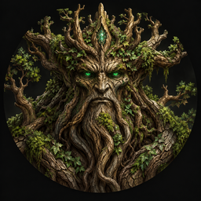
Ent AncestralFloresta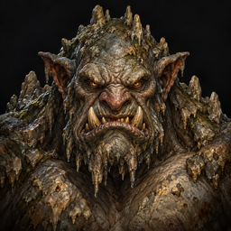
Troll das ProfundezasCaverna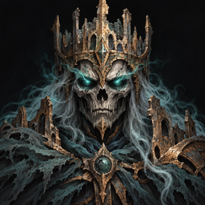
Rei EspectralRuinas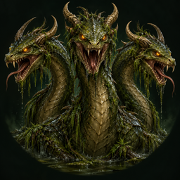
Hidra do LodoPantano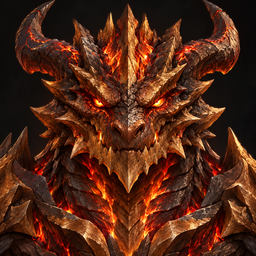
Draco MagmaticoVulcao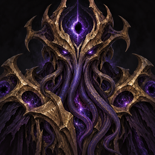
Arauto do VazioAbismo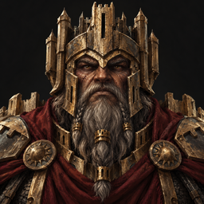
General de AcoFortaleza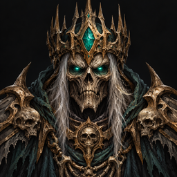
Lorde da CriptaNecropole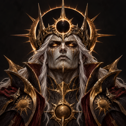
Imperador do EclipseCitadela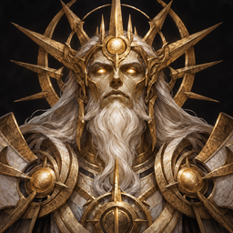
Avatar do ZenithPanteao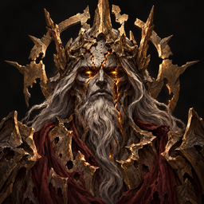
Deus da RuinaCataclismo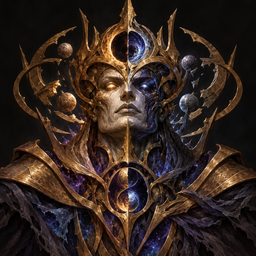
Soberano do ParadoxoParadoxoA borda acompanha o progresso
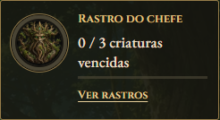
0 / 3 criaturas diferentes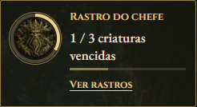
1 / 3 criaturas diferentes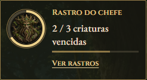
2 / 3 criaturas diferentes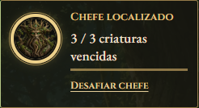
3 / 3 criaturas diferentes48 materiais novos com imagens próprias
Os componentes secundários deixaram de reutilizar a imagem do primeiro drop. Os materiais antigos conservam suas imagens.
Floresta
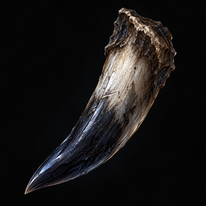
Presa SombriaLobo Sombrio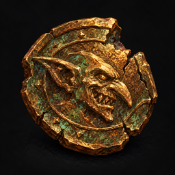
Moeda Goblin LascadaGoblin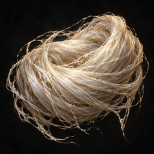
Fio de Seda GiganteAranha Gigante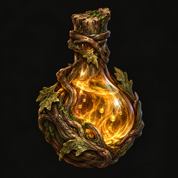
Seiva AncestralEnt AncestralCaverna
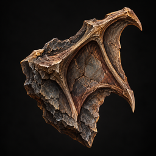
Fragmento de Rocha AladaMorcego de Pedra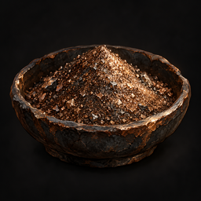
Poeira de FerroEsqueleto Mineiro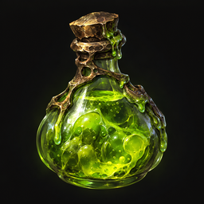
Muco ToxicoSlime Toxico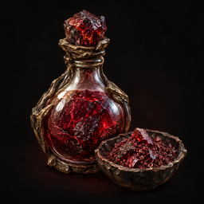
Sangue PetrificadoTroll das ProfundezasRuinas
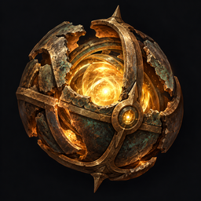
Nucleo da SentinelaSentinela Quebrada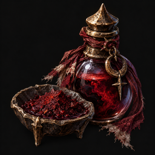
Tinta RitualCultista Perdido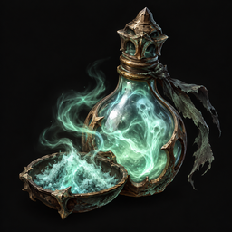
Ectoplasma AntigoFantasma Antigo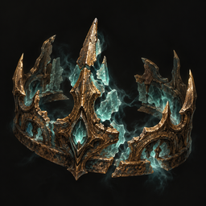
Coroa Espectral QuebradaRei EspectralPantano
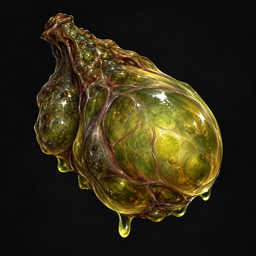
Glandula PantanosaSapo Colossal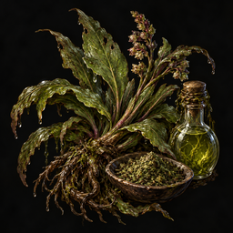
Erva do BrejoBruxa do Brejo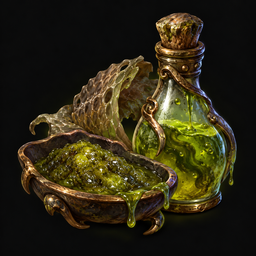
Veneno do LodoSerpente do Lodo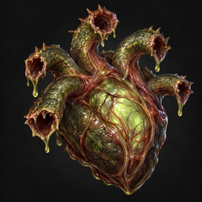
Coracao da HidraHidra do LodoVulcao
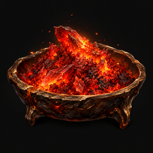
Brasa RubraSalamandra Rubra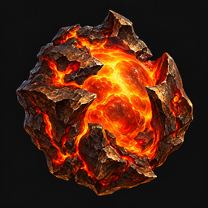
Nucleo de MagmaGolem de Brasa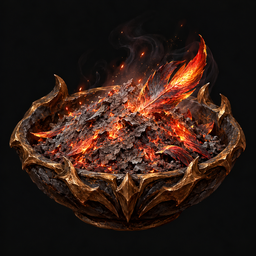
Cinza da FenixFenix Sombria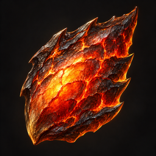
Escama MagmaticaDraco MagmaticoAbismo
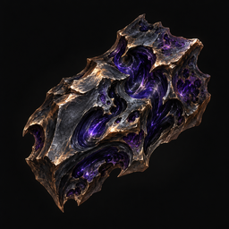
Aco AbissalCavaleiro Abissal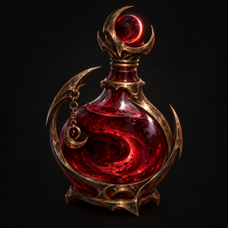
Sangue do EclipseLamia do Eclipse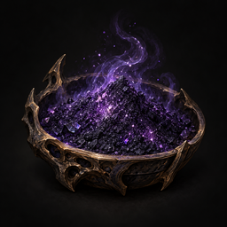
Poeira do VazioColosso do Vazio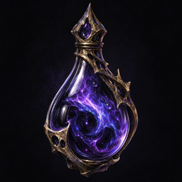
Lagrima do ArautoArauto do VazioFortaleza
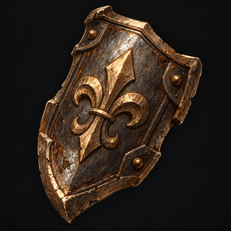
Placa de EscudeiroEscudeiro de Ferro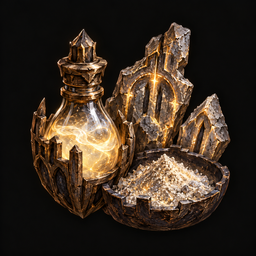
Runas da MuralhaMaga da Muralha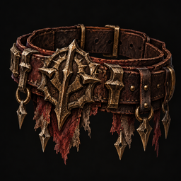
Correia de GuerraCarrasco de Guerra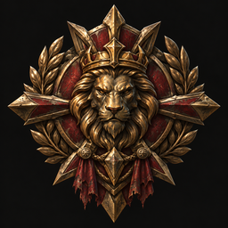
Insignia do GeneralGeneral de AcoNecropole
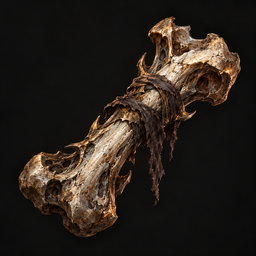
Osso FunebreGuardiao Funebre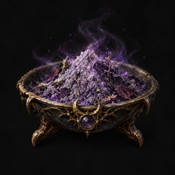
Po da FeiticeiraFeiticeira Morta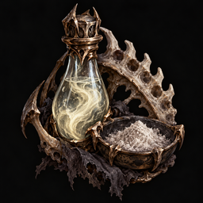
Medula do CeifadorCeifador de Ossos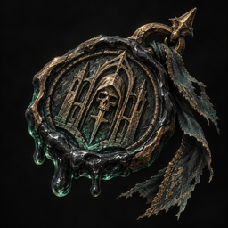
Selo da CriptaLorde da CriptaCitadela
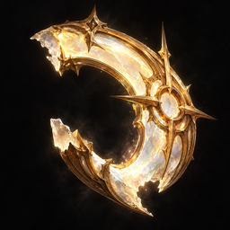
Fragmento de HaloAnjo Caido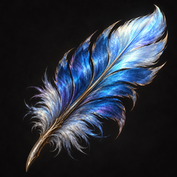
Pena CelesteDrake CelestePoeira AstralExecutor AstralSangue do ImperadorImperador do EclipsePanteao
Ouro VivoGuardiao AureoCristal RadianteOraculo RadianteEssencia SolarQuimera SolarLuz do ZenithAvatar do Zenith Cataclismo
Cinza do CataclismoArauto do CataclismoFragmento da RuinaTitan RachadoResiduo do FimSerafim do FimCentelha DivinaDeus da Ruina Paradoxo
Areia TemporalGuardiao TemporalEspiral do ZeroOraculo do ZeroEco de Outra EraDevorador de ErasFio do ParadoxoSoberano do Paradoxo Prompts e origem das artes · Catálogo de arquivos do jogo